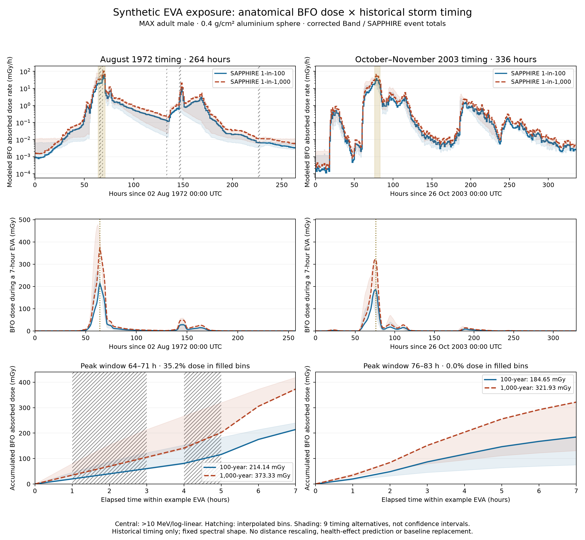
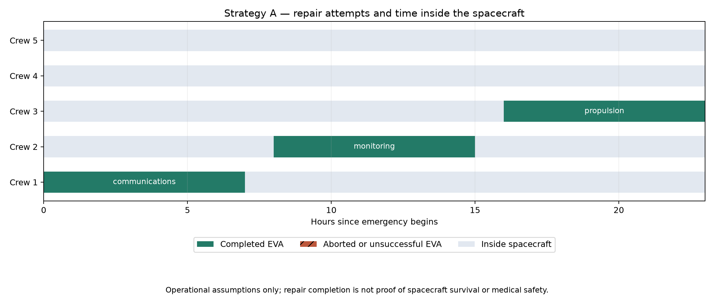
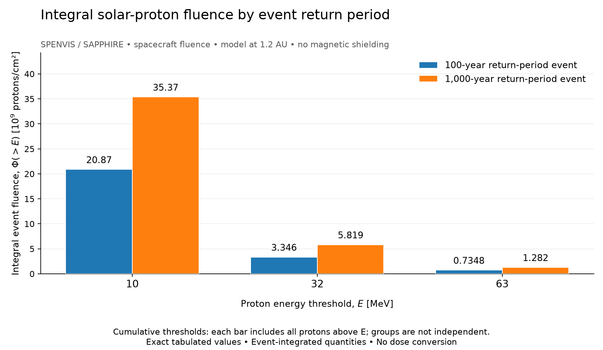
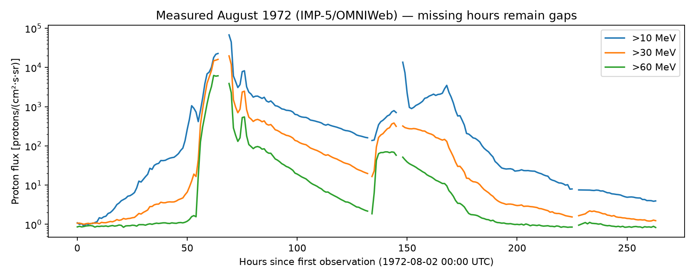
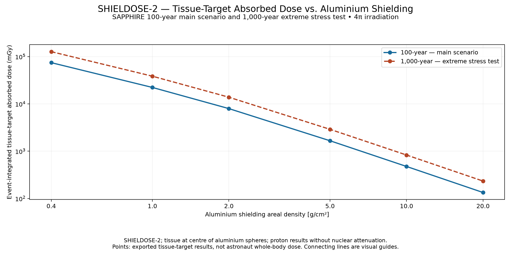
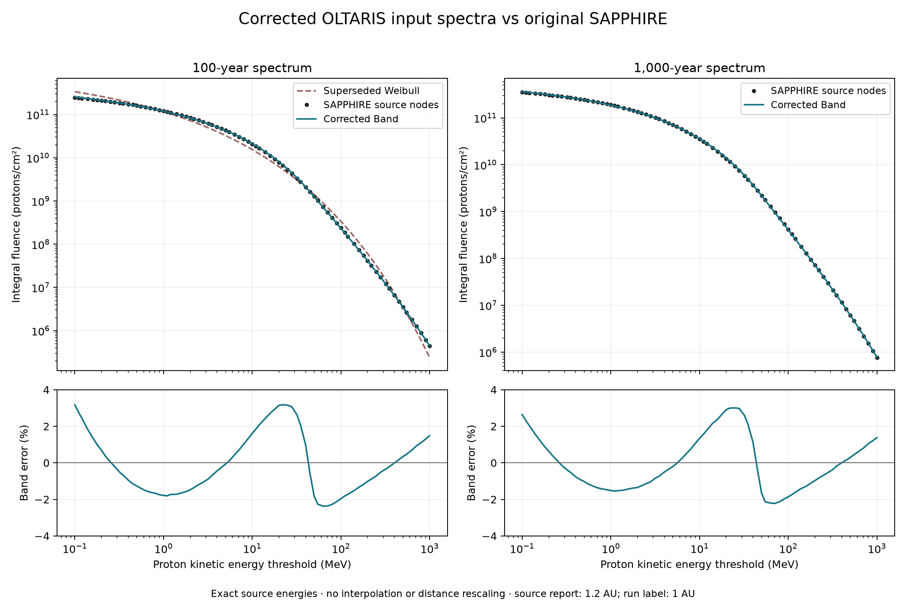

Start with astronaut exposure and the mission timeline. Click any image for the full-resolution PNG. The remaining figures support the source, severity and shielding explanation.
Reference solar-proton spectra applied near 1.25 AU without distance rescaling. Exposure estimates are not predictions of symptoms or individual health outcomes.
SAPPHIRE 100-year and 1,000-year anatomical BFO dose with 1972 and 2003 timing. Includes seven-hour exposure and accumulation; hatched periods are interpolated. The peak-window examples are retrospective comparisons, not Strategy A schedules.

Current NTP / 100-year / 1972 example, with qualitative constraints enabled. Shows who performs each repair and when. Completion does not establish survival or medical safety.

Event-integrated SAPPHIRE proton fluence at selected energy thresholds. This is not absorbed dose.

Measured 1972 proton-flux channels supply the timing profile, not measured astronaut dose.

SHIELDOSE-2 tissue-target dose versus aluminium shielding. This reference is separate from the simulator’s OLTARIS anatomical BFO dose.

Corrected Band fit against the original SAPPHIRE spectra; the earlier Weibull fit is historical. Agreement of spectra does not by itself establish dose accuracy.

Recreate this gallery: .venv/bin/python -B charts/build_final_case.py